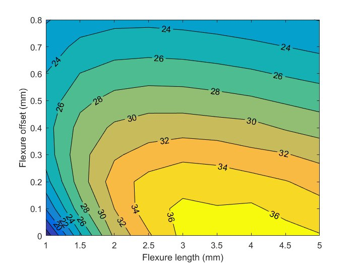
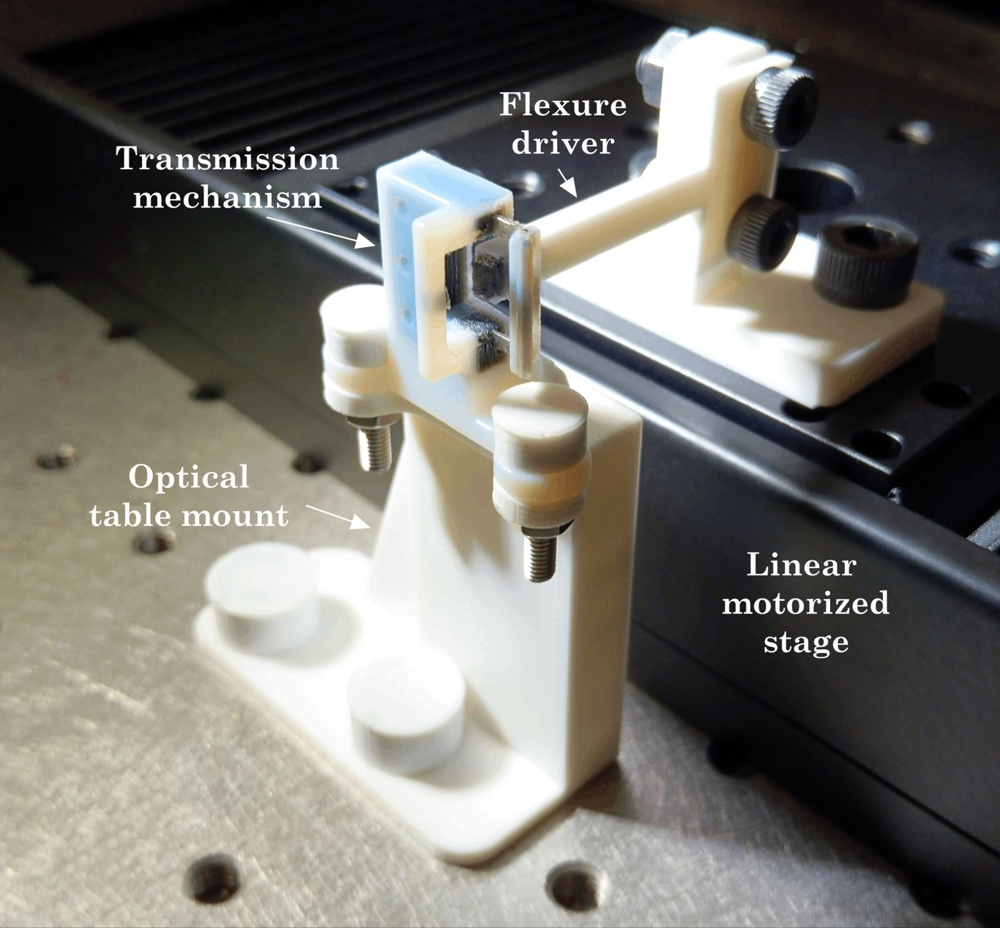
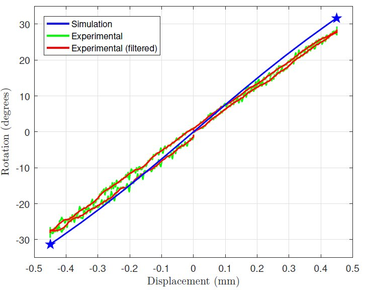

Results
- Converted a ±0.5625 mm linear input from the test stage into up to about 29° of rotation in each direction. (On the robot, each transmission is driven through ±0.45 mm.)
- The multi-material design performed best: the 392 µm version came within 6–9% of simulation, compared with 23–29% for the all-flexible base.
- Selected a 308 µm flexure thickness for the robot (see why).
Choosing the flexure thickness
I printed and tested three flexure thicknesses side by side. The 196 µm flexures were very hard to clean without damaging them. The 392 µm version diverged strongly from its predicted rotation at positive displacements. The 308 µm version reached a smaller peak rotation, but gave the most linear response of the three, so I used it for the robot.
The later multi-material redesign changed the picture: there, the 392 µm version matched simulation most closely (within 6–9%). My thesis also notes that the gap between the two thicknesses would likely grow if the flexure offset were reduced, so the choice is worth revisiting in a future design iteration.
Motivation
Piezoelectric actuators are fast and precise, but they only move fractions of a millimeter. To power a small robot, that motion has to become large rotation, and gears or pinned linkages are hard to build at this size. This project designed a compliant transmission that does the conversion through flexing material alone, so it can be 3D printed in one piece. It became the core mechanism of my millimeter-scale robot.
My role
As an undergraduate research assistant in York University's Responsive Materials & Robotics Laboratory, I designed, modeled, fabricated and tested the transmission. The goal was to make millimeter-scale robots cheaper and simpler to build. The work led to my Master's thesis, and I presented it as first author at the 2022 IEEE/ASME AIM conference in Sapporo.
Skills
- Finite element analysis: non-linear, frequency response and dynamic (ABAQUS)
- Custom beam-element FE code (MATLAB)
- Design optimization and parameter studies
- Compliant mechanisms and monolithic design
- Rapid prototyping: PolyJet and FDM printing
- Experimental testing and optical measurement
- CAD
Approach
- Initial design: modeled candidate designs in ABAQUS. The long flexures and large deformations ruled out rigid-body and pseudo-rigid-body models.
- Fast parameter sweeps: wrote a simplified 2D beam-element finite element model in MATLAB to sweep design parameters quickly, then confirmed the trends with 3D ABAQUS models.
- Key finding: flexure thickness was the most critical parameter, followed by flexure length and the angle between flexures.
- Prototypes: printed versions with 196, 308 and 392 µm flexures in flexible Agilus30 (PolyJet).
- Testing: drove each prototype from a micrometer stage across a ±0.5625 mm test range and measured rotation optically from overhead images in MATLAB, with under 1% measurement error.
- Revision: redesigned as a multi-material part, with rigid VeroWhite encasing the flexible flexures to reduce the risk of material separation during cleaning, then retested on a motorized stage.
Design process

Testing


What I learned
3D printing made big design changes, like switching to a multi-material part, possible with no added manufacturing time. The simplified model was ideal for exploring the design quickly, but it drifted from the full model as the flexures got thicker (shear, geometric nonlinearity and material incompressibility), so I used it to explore and the full finite element model to confirm.
Publications
- A. Tabak and R. Orszulik, “A monolithic flexible transmission for piezoelectric actuators,” 2022 IEEE/ASME International Conference on Advanced Intelligent Mechatronics (AIM), pp. 138–143.
- A. Tabak and R. Orszulik, “Additively manufactured transmission design for mesoscale mechanisms,” abstract, CSME International Congress 2022. Read the abstract
- Full details in my M.Sc. thesis. Read the thesis